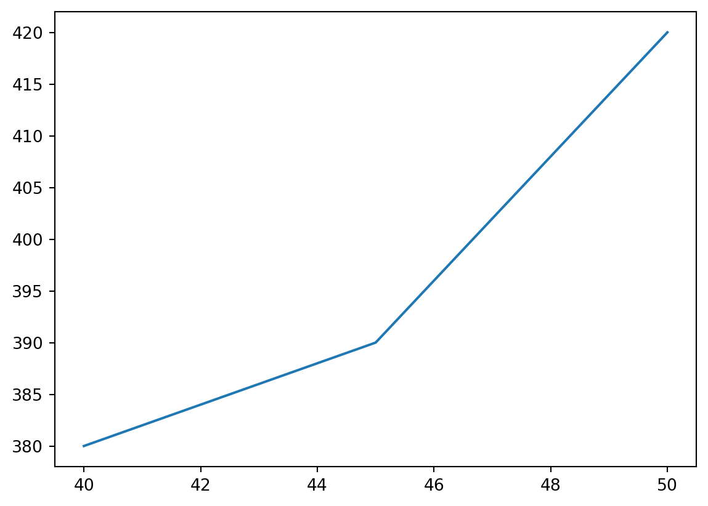
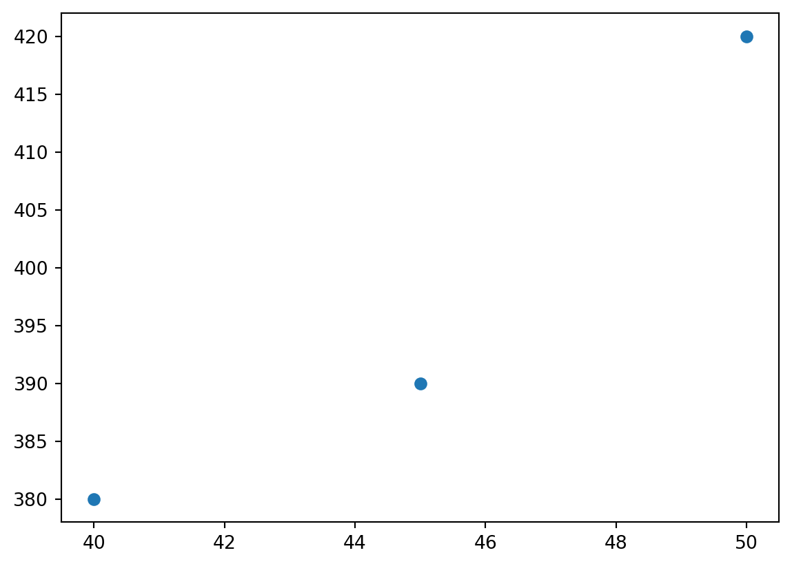
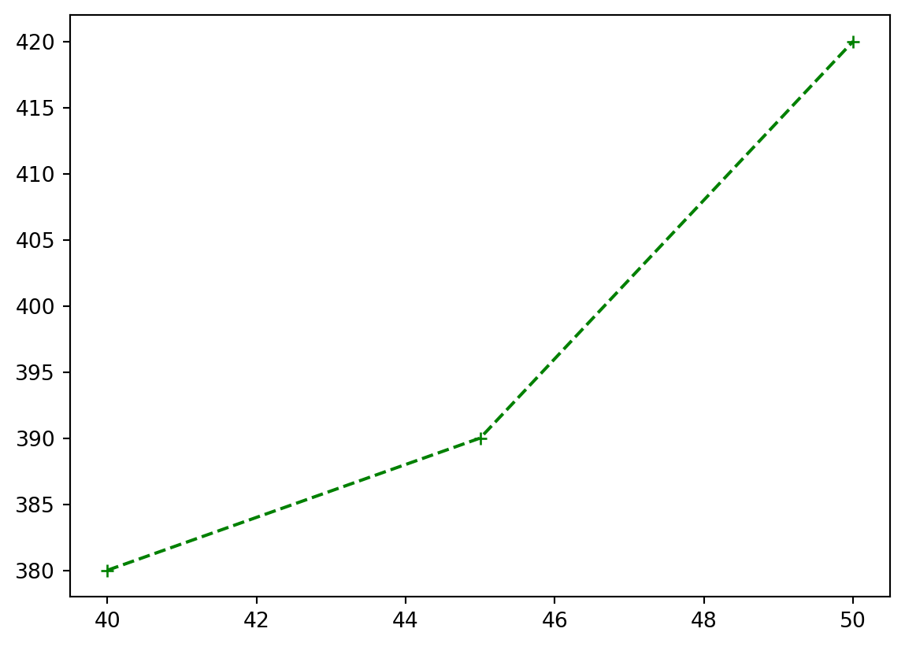
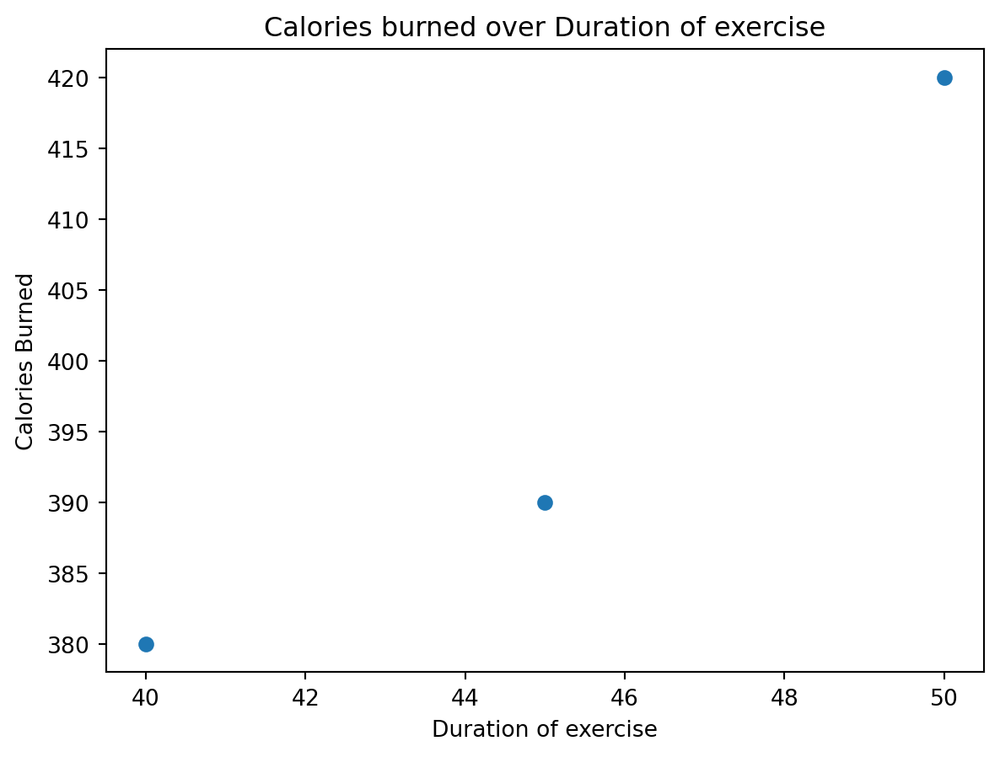
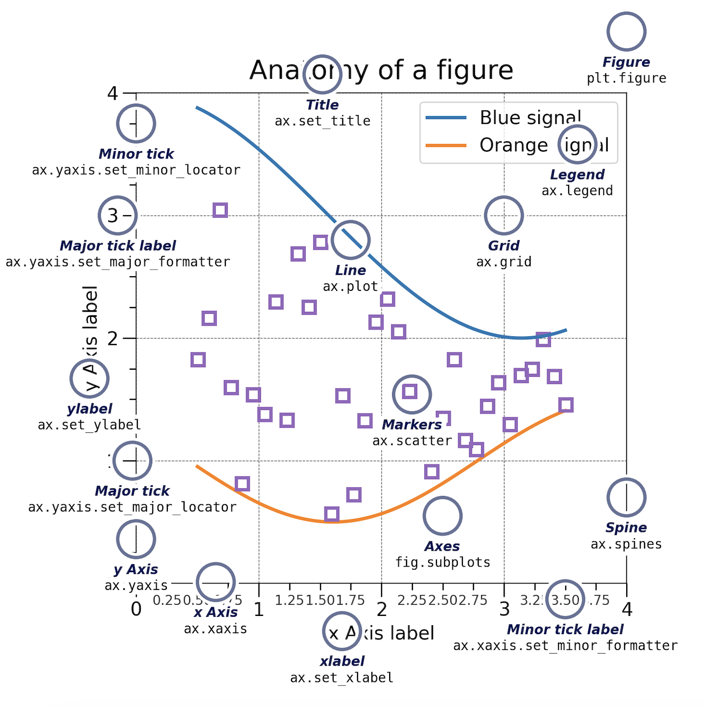
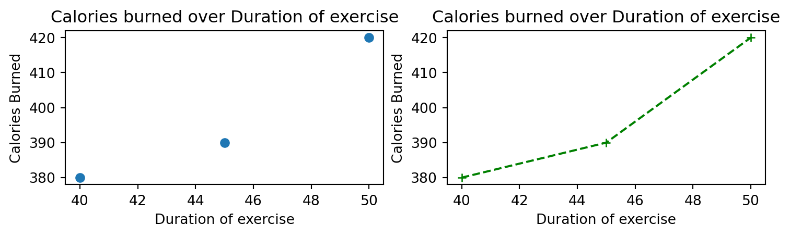
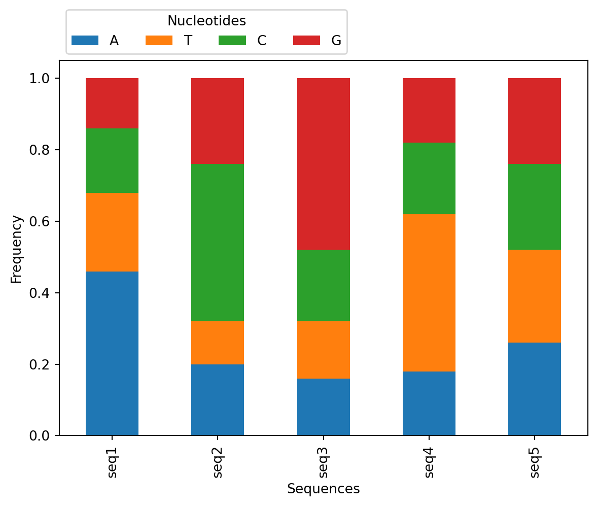
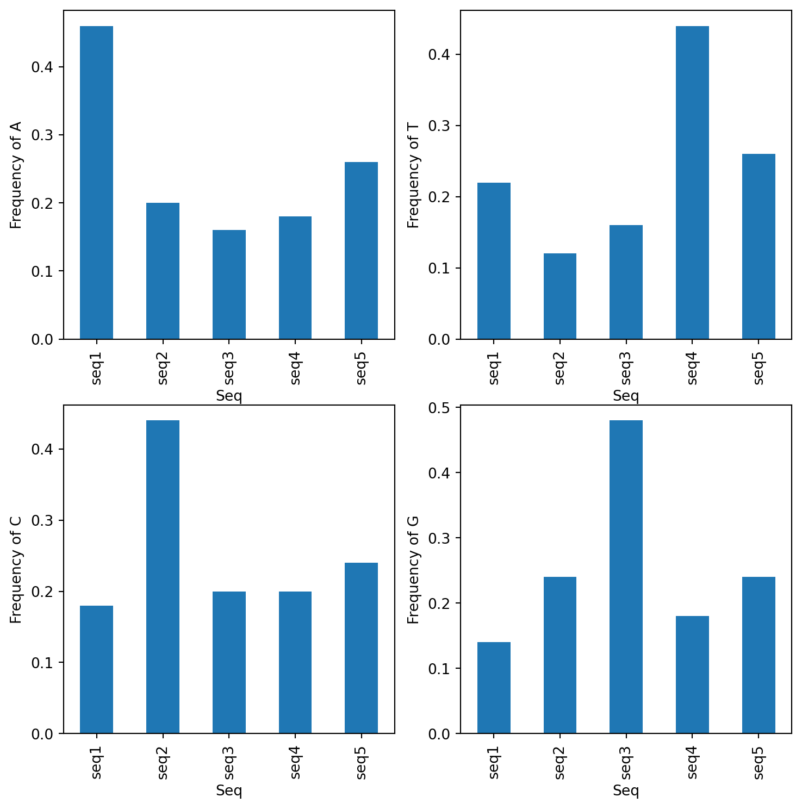

# round(number, ndigits=None)
x = round(number = 5.76543, ndigits = 2)
print(x)5.77At the end of this class, you will be able to:
A function stores a piece of code that performs a certain task, and that gets run when called. It takes some data as input (parameters that are required or optional), and returns an output (that can be of any type).
We already learned how to run a predefined function in the last lesson. You need to write its name followed by parenthesis. Parameters are added inside the parenthesis as follow:
# round(number, ndigits=None)
x = round(number = 5.76543, ndigits = 2)
print(x)5.77To get more information about a function, use the help() function.
We will now learn how to create our own function.
In python, a function is declared with the keyword def followed by its name, and the arguments inside parenthesis. The next block of code, corresponding to the content of the function, must be indented. The output is defined by the return keyword.
def hello(name):
"""Presenting myself.
Parameters:
name (str): My name.
"""
presentation = f"Hello, my name is {name}."
return presentationtext = hello(name = "Valentine")
print(text)Hello, my name is Valentine.As you may have noticed, you can also add a description of the function directly after the function definition. It is the message that will be shown when running help(). As it can be along text over multiple lines, it is common to put it inside triple quotes """.
help(hello)Help on function hello in module __main__:
hello(name)
Presenting myself.
Parameters:
name (str): My name.
You can have several arguments. They can be mandatory or optional. To make them optional, they need to have a default value assigned inside the function definition, like so:
def hello(name, french = True):
"""Presenting myself.
Parameters:
name (str): My name.
french (bool, optional): Whether to greet in french (True) or not (False).
"""
if french:
presentation = f"Bonjour, je m'appelle {name}."
else:
presentation = f"Hello, my name is {name}."
return presentationThe parameter nameis mandatory, but french is optional.
hello("Valentine")"Bonjour, je m'appelle Valentine."hello(french = False)--------------------------------------------------------------------------- TypeError Traceback (most recent call last) Cell In[7], line 1 ----> 1 hello(french = False) TypeError: hello() missing 1 required positional argument: 'name'
Reminder: if you provide the parameters in the exact same order as they are defined, you don’t have to name them. If you name the parameters you can switch their order. As good practice, put all required parameters first.
hello(french = False, name = "Valentine")'Hello, my name is Valentine.'hello("Valentine", False)'Hello, my name is Valentine.'If no return statement is given, then no output will be returned, but the function will still be run.
def hello(name):
"""Presenting myself."""
print("We are inside the 'hello()' function.")
presentation = f"Hello, my name is {name}."print(hello("Valentine"))We are inside the 'hello()' function.
NoneThe output can be of any type. If you have a lot of things to return, you might want to return a list or a dict for example.
def multiple_of_3(list_of_numbers):
"""Returns the number that are multiple of 3."""
multiples = []
for num in list_of_numbers:
if num % 3 == 0:
multiples.append(num)
return multiples
multiple_of_3(range(1, 20, 2))[3, 9, 15]This could be written as a one-liner.
def multiple_of_3(list_of_numbers):
"""Returns the number that are multiple of 3."""
multiples = [num for num in list_of_numbers if num % 3 == 0]
return multiples
multiple_of_3(range(1, 20, 2))[3, 9, 15]Write a function called nucl_freq to compute nucleotide frequency of a sequence. Given a sequence as input, it outputs a dictionnary with keys being the nucleotides A, T, C and G, and values being their frequency in the sequence.
With the input given below, the output should be:
def ...
# Your code here
nucl_freq("ATTCCCGGGG"){'A': 0.1, 'G': 0.4, 'C': 0.3, 'T': 0.2}The key function to work with files in open(). It has two parameters file and mode.
# Write the correct path for you!
fasta_file = 'exercise/data/example.fasta'
f = open(fasta_file, mode = 'r')The modes can be one of the following:
| Mode | Description |
|---|---|
r |
Opens a file for reading, error if the file does not exist (default) |
a |
Opens a file for appending, creates the file if it does not exist |
w |
Opens a file for writing, creates the file if it does not exist |
x |
Creates the specified file, returns an error if the file exists |
The open() function returns a file object, which has a read() method for reading the content of the file:
print(f.read())>seq1
TTAGCTAAATAGCTAGCAAACTAGCTAGCTAAAAAAAAAACTAGCTAGCT
>seq2
ATGCCAGCCAGCCAGCCAGCCAGCTCGCTCGCTCGCCAGCCAGCTAGCTA
>seq3
CCGGGCGGTCGATGGATGGAGGGAGCGAGCGATCGATCGGTCGATCGGTG
>seq4
GATCGATCGATCTTTTTATCGATCGATTGTTCTTTCGATCGTTCTATCGA
>seq5
ACGTACGTACGTACGTACGTACGTACGTACGTACGTACGTACGTACGTAT
The parameter size = can be added to specify the number of bytes (~ characters) to return.
# We need to re-open it because we have already parsed the whole file
f = open(fasta_file, mode = 'r')
print(f.read(2))>sYou can return one line by using the .readline() method. By calling it two times, you can read the two first lines:
f = open(fasta_file, mode = 'r')
print(f.readline())
print(f.readline())>seq1
TTAGCTAAATAGCTAGCAAACTAGCTAGCTAAAAAAAAAACTAGCTAGCT
By looping through the lines of the file, you can read the whole file, line by line:
for i, line in enumerate(f):
print(i, line) 0 >seq2
1 ATGCCAGCCAGCCAGCCAGCCAGCTCGCTCGCTCGCCAGCCAGCTAGCTA
2 >seq3
3 CCGGGCGGTCGATGGATGGAGGGAGCGAGCGATCGATCGGTCGATCGGTG
4 >seq4
5 GATCGATCGATCTTTTTATCGATCGATTGTTCTTTCGATCGTTCTATCGA
6 >seq5
7 ACGTACGTACGTACGTACGTACGTACGTACGTACGTACGTACGTACGTAT
It is a good practice to close the file when you are done with it.
f.close() In some cases, changes made to a file may not show until you close the file.
A common syntax to handle files that you might encounter is:
with open(fasta_file, 'r') as f:
print(f.readline())>seq1
This code is equivalent to
f = open(fasta_file, 'r')
try:
print(f.readline())
finally:
f.close()>seq1
The with statement is an example of a context manager, i.e. it allows to allocate and release resources precisely, by cleaning up the resources once they are no longer needed.
To write into a file, you must have it open under a w, a mode.
Then, the method write() can be used.
txt_file = "exercise/data/some_file.txt"
f = open(txt_file, "w")
f.write("Woops! I have deleted the content!\n")
f.close()
# Read the current content of the file
f = open(txt_file, "r")
print(f.read()) Woops! I have deleted the content!
Be very careful when opening a file in write mode as you can delete its content without any way to retrieve the original file!
As you may have noticed, write() returns the number of characters written. You can prevent it from being printed by assigning the return value to a variable that will not be used.
f = open(txt_file, "a")
_ = f.write("Now the file has more content!\n")
f.close()
# Read the current content of the file
f = open(txt_file, "r")
print(f.read()) Woops! I have deleted the content!
Now the file has more content!
You must specify a newline with the character:
\n in Linus/MacOS\r\n in Windows\r in MacOS before XPython has a built-in package called os, to interact with the operating system.
import os Here are some useful functions from the os package.
| Function | Description |
|---|---|
getcwd() |
Returns the current working directory |
chdir() |
Change the current working directory |
listdir() |
Returns a list of the names of the entries in a directory |
mkdir() |
Creates a directory |
makedirs() |
Creates a directory recursively |
These functions can be useful if you don’t manage to open a file, or don’t find where you created it. Because it might just be that you are not in the directory you think:
# Verify your working directory
os.getcwd()'/home/runner/work/python-intro/python-intro'# Change you working directory if needed
os.chdir("/Users/gilbartv/Documents/git")In other cases, to create a file, the folder it belongs to must already exist, so you need to create it automatically via python:
# Create a new directory recursively (if Documents/ does not exist it would be created)
# If the directory is already created, don't raise an error
os.makedirs("/Users/gilbartv/Documents/NewFolder", exist_ok=True)Create a function that:
Seq A C T G
seq1 0.1 0.2 0.3 0.4
seq2 0.4 0.3 0.2 0.1
...To make this easier, consider that the sequences in the fasta file are only in one line.
You might make good use of the method str.strip().
You can take as input the file in exercise/data/example.fasta you should get the same result as exercise/data/example.txt.
def analyse_fasta(input_file, output_file):
...
input_file = "exercise/data/example.fasta"
output_file = "exercise/data/example.txt"
analyse_fasta(input_file, output_file)A python package contains a set of function to perform specific tasks.
A package needs to be installed to your computer one time.
Installing a package is done outside of the python interpreter, in command line in a terminal.
You can install a package with pip. It should have been automatically installed with your python, to make sure that you have it you can run:
# In Linux/MacOS
python -m pip --version
# In Windows
py -m pip --versionIf it does not work, check out pip documentation
To install a package called pandas, you must run:
# In Linux/MacOS
python -m pip install pandas
# In Windows
py -m pip install pandasTo get more information about pip, check out the full documentation.
When you wish to use a package in a python script, you’ll need to import it, by writing inside of you script:
import pandasPandas is a package used to work with data sets, in order to easily clean, manipulate, explore and analyze data.
Pandas provides two types of classes for handling data:
Series: a one-dimensional labeled array holding data of any type such as integers or strings. It is like a column in a table.# If nothing else is specified, the values are labeled with their index number (starting from `0`).
myseries = pandas.Series([1, 7, 2], index = ["x", "y", "z"])
print(myseries)x 1
y 7
z 2
dtype: int64DataFrame: a two-dimensional data structure that holds data like a two-dimension array or a table with rows and columns. It is like a table.data = {
"calories": [420, 380, 390],
"duration": [50, 40, 45]
}
df = pandas.DataFrame(data)
print(df) calories duration
0 420 50
1 380 40
2 390 45You can also create a DataFrame from a file.
# Make sure this is the correct path for you! You are in the directory from where you execute the script.
df = pandas.read_csv('exercise/data/sample.csv')
print(df) Gene Expression_Level Tissue
0 GeneA 8.7 Heart
1 GeneB 3.2 Heart
2 GeneA 7.0 Brain
3 GeneB 10.2 Brain
4 GeneA 6.6 Liver
5 GeneB 7.6 LiverYou get access to the index and column names with:
df.columnsIndex(['Gene', 'Expression_Level', 'Tissue'], dtype='object')df.indexRangeIndex(start=0, stop=6, step=1)You can rename index and column names:
df = df.rename(index={0: 'a', 1: 'b', 2: 'c',
3: 'd', 4: 'e', 5 : 'f'})
df.indexIndex(['a', 'b', 'c', 'd', 'e', 'f'], dtype='object')You can select rows:
# Select one row by its label
df.loc[['a']]| Gene | Expression_Level | Tissue | |
|---|---|---|---|
| a | GeneA | 8.7 | Heart |
# Select one row by its index
df.iloc[[0]]| Gene | Expression_Level | Tissue | |
|---|---|---|---|
| a | GeneA | 8.7 | Heart |
# Select several rows by labels
df.loc[['a','c']]| Gene | Expression_Level | Tissue | |
|---|---|---|---|
| a | GeneA | 8.7 | Heart |
| c | GeneA | 7.0 | Brain |
# Select one row by index
df.iloc[[0,2]]| Gene | Expression_Level | Tissue | |
|---|---|---|---|
| a | GeneA | 8.7 | Heart |
| c | GeneA | 7.0 | Brain |
You can select columns:
# Select one column by label
df['Tissue'] # Seriesa Heart
b Heart
c Brain
d Brain
e Liver
f Liver
Name: Tissue, dtype: objectdf[['Tissue']] # DataFrame| Tissue | |
|---|---|
| a | Heart |
| b | Heart |
| c | Brain |
| d | Brain |
| e | Liver |
| f | Liver |
# Select several columns
df[['Gene','Expression_Level']]| Gene | Expression_Level | |
|---|---|---|
| a | GeneA | 8.7 |
| b | GeneB | 3.2 |
| c | GeneA | 7.0 |
| d | GeneB | 10.2 |
| e | GeneA | 6.6 |
| f | GeneB | 7.6 |
# Select several columns by index
df.iloc[:,[0,1]]| Gene | Expression_Level | |
|---|---|---|
| a | GeneA | 8.7 |
| b | GeneB | 3.2 |
| c | GeneA | 7.0 |
| d | GeneB | 10.2 |
| e | GeneA | 6.6 |
| f | GeneB | 7.6 |
You can select rows and columns as follows:
df.loc[['b'], ['Gene','Expression_Level']]| Gene | Expression_Level | |
|---|---|---|
| b | GeneB | 3.2 |
You can filter based on a condition as follows:
df[df['Expression_Level'] > 6]| Gene | Expression_Level | Tissue | |
|---|---|---|---|
| a | GeneA | 8.7 | Heart |
| c | GeneA | 7.0 | Brain |
| d | GeneB | 10.2 | Brain |
| e | GeneA | 6.6 | Liver |
| f | GeneB | 7.6 | Liver |
To better understand how df[df['Expression_Level'] > 6] works, let’s break it down.
df['Expression_Level']a 8.7
b 3.2
c 7.0
d 10.2
e 6.6
f 7.6
Name: Expression_Level, dtype: float64rows_to_keep = df['Expression_Level'] > 6
rows_to_keepa True
b False
c True
d True
e True
f True
Name: Expression_Level, dtype: boolEach value in df['Expression_Level'] is being tested against the condition > 6 and a boolean in being return.
df[rows_to_keep]| Gene | Expression_Level | Tissue | |
|---|---|---|---|
| a | GeneA | 8.7 | Heart |
| c | GeneA | 7.0 | Brain |
| d | GeneB | 10.2 | Brain |
| e | GeneA | 6.6 | Liver |
| f | GeneB | 7.6 | Liver |
Rows of the DataFrame are being filtered by boolean values. If True the row is kept, if False it is dropped.
To explore the data set, use the following methods:
df.info()<class 'pandas.core.frame.DataFrame'>
Index: 6 entries, a to f
Data columns (total 3 columns):
# Column Non-Null Count Dtype
--- ------ -------------- -----
0 Gene 6 non-null object
1 Expression_Level 6 non-null float64
2 Tissue 6 non-null object
dtypes: float64(1), object(2)
memory usage: 364.0+ bytesdf.describe()| Expression_Level | |
|---|---|
| count | 6.000000 |
| mean | 7.216667 |
| std | 2.358319 |
| min | 3.200000 |
| 25% | 6.700000 |
| 50% | 7.300000 |
| 75% | 8.425000 |
| max | 10.200000 |
df.head()| Gene | Expression_Level | Tissue | |
|---|---|---|---|
| a | GeneA | 8.7 | Heart |
| b | GeneB | 3.2 | Heart |
| c | GeneA | 7.0 | Brain |
| d | GeneB | 10.2 | Brain |
| e | GeneA | 6.6 | Liver |
df.sort_values(by="Gene")| Gene | Expression_Level | Tissue | |
|---|---|---|---|
| a | GeneA | 8.7 | Heart |
| c | GeneA | 7.0 | Brain |
| e | GeneA | 6.6 | Liver |
| b | GeneB | 3.2 | Heart |
| d | GeneB | 10.2 | Brain |
| f | GeneB | 7.6 | Liver |
df['Expression_Level'].mean()
df.groupby("Gene")[['Expression_Level']].mean()| Expression_Level | |
|---|---|
| Gene | |
| GeneA | 7.433333 |
| GeneB | 7.000000 |
To get more information on how to use pandas, check out:
Create a pandas DataFrame from the file containing the frequency of each nucleotide per sequences (exercise/data/example.txt).
Make sure that df.index contains the name of the sequences, and df.columns contains the nucleotides.
Use pandas.melt() (see the example in the doc) to get the data in the following format:
nucl freq
Seq
seq1 A 0.46
seq2 A 0.20
seq3 A 0.16
seq4 A 0.18
seq5 A 0.26
seq1 T 0.22
seq2 T 0.12
...Get the mean value of all nucleotide frequencies.
Get the mean value of frequencies per nucleotide.
Filter to remove values of seq1.
Recompute the mean value of frequencies per nucleotide.
Matplotlib is a package to create visualizations in Python widely used in science.
To shorten the name of the package when we call its functions, we can import it with a nickname, as follows:
import pandas as pd
df = pd.read_csv('exercise/data/sample.csv')For matplotlib, we usually import like so:
import matplotlib.pyplot as pltpyplot is one of the modules of matplotlib. It contains functions to generate basic plots.
To create your first plot, you can use the function plt.plot() that draws points to plot, and by default draws a line from point to points:
data = {
"calories": [420, 380, 390],
"duration": [50, 40, 45]
}
df = pd.DataFrame(data).sort_values(by="duration")
x = df['duration']
y = df['calories']
plt.plot(x, y)
plt.show()
The first parameter is for the x-axis, and the second for the y-axis
To only plot the points, one can add the format (it can be color, marker, linestyle):
plt.plot(x, y, 'o') # point as markers
plt.show()
plt.plot(x, y, 'g+--') # Green as color, plus as marker, dash as line
plt.show()
X and y labels and plot title can be added:
plt.plot(x, y, 'o')
plt.xlabel("Duration of exercise")
plt.ylabel("Calories Burned")
plt.title("Calories burned over Duration of exercise")
plt.show()
The first way of plotting is function-oriented. It relies on pyplot to implicitly create and manage the Figures and Axes, and use pyplot functions for plotting.
There is a second way of plotting called object-oriented. It needs to explicitly create Figures and Axes, and call methods on them (the “object-oriented (OO) style”).
You might encounter both styles of coding.
In object-oriented, the plot above would be created like so:
fig, ax = plt.subplots(1) # Create the Figure and Axes
ax.plot(x, y, 'o') # Apply methods on the axes
ax.set_xlabel("Duration of exercise")
ax.set_ylabel("Calories Burned")
ax.set_title("Calories burned over Duration of exercise")
plt.show()Notice that the names of the functions/methods called are not the same: the function xlabel() is used for the function-oriented manner and the method set_xlabel() is used for the object-oriented.
Matplotlib graphs your data on Figures, each of which can contain one or more Axes. An Axes is an area where points can be specified in terms of x-y coordinates.
Axes contains a region for plotting data and includes generally two Axis objects (2D plots), a title, an x-label, and a y-label. The Axes methods (e.g. .set_xlabel()) are the primary interface for configuring most parts of your plot (adding data, controlling axis scales and limits, adding labels etc.).
An Axis sets the scale and limits and generate ticks (the marks on the Axis) and ticklabels (strings labeling the ticks).
Be aware of the difference between Axes and Axis.

To create a Figure with 2 Axes, run:
# a figure with a 1x2 (nrow x ncolumn) grid of Axes
# and of defined size figsize=(width,height)
fig, axs = plt.subplots(1, 2, figsize=(9,2))
axs[0].plot(x, y, 'o') # Apply methods on the axes
axs[0].set_xlabel("Duration of exercise")
axs[0].set_ylabel("Calories Burned")
axs[0].set_title("Calories burned over Duration of exercise")
axs[1].plot(x, y, 'g+--') # Apply methods on the axes
axs[1].set_xlabel("Duration of exercise")
axs[1].set_ylabel("Calories Burned")
axs[1].set_title("Calories burned over Duration of exercise")
plt.show()
There are many other plot available: .scatter(), .bar(), .hist(), .pie(), .boxplot()…
You can save a figure with the savefig() function:
plt.savefig('exercise/data/figure.png')<Figure size 672x480 with 0 Axes>Note that plt refer to a global figure variable and after a figure has been displayed to the screen (e.g. with plt.show) matplotlib will make this variable refer to a new empty figure. Therefore, make sure you call plt.savefig before the plot is displayed to the screen, otherwise you may find a file with an empty plot.
# a figure with a 1x2 (nrow x ncolumn) grid of Axes
# and of defined size figsize=(width,height)
fig, axs = plt.subplots(1, 2, figsize=(9,2))
axs[0].plot(x, y, 'o') # Apply methods on the axes
axs[0].set_xlabel("Duration of exercise")
axs[0].set_ylabel("Calories Burned")
axs[0].set_title("Calories burned over Duration of exercise")
axs[1].plot(x, y, 'g+--') # Apply methods on the axes
axs[1].set_xlabel("Duration of exercise")
axs[1].set_ylabel("Calories Burned")
axs[1].set_title("Calories burned over Duration of exercise")
plt.savefig('exercise/data/figure.png')
plt.show()The plot can also be save ad ps, pdf or svg. Moreover, the resolution can be modified. See the documentation of savefig.
For more information, check out the following ressources:
Create a script that gets nucleotide frequency data from a file in the format of exercise/data/example.txt, and visualizes it using Matplotlib and Pandas.
Your script should read the data, create a stacked bar chart showing the nucleotide frequencies for each sequence, and label the axes appropriately. Finally, save your plot as a png file. Here’s the expected plot:

Create a figure of 4 bar plots, where each bar plot contains the frequency of one nucleotide for each sequences. Label the axes appropriately. Finally, save your plot as a png file. Here’s the expected plot:

There are MANY packages available, here’s a short list of some that might interest you:
| Package | Usage | Example of usage |
|---|---|---|
| BioPython | Computational molecular biology | Sequence handling, access to NCBI databases |
| NumPy | Numerical arrays | Data manipulation, mathematical operations, linear algebra |
| Seaborn | High-level interface for drawing plots | Data visualization, statistical graphics |
| HTSeq | High throughput sequencing | Quality and coverage, counting reads, read alignment |
| Scanpy | Single-Cell Analysis | Preprocessing, visualization, clustering |
| SciPy | Mathematical algorithms | Clustering, ODE, Fourier Transforms |
| Scikit-image | Image processing | Image enhancement, segmentation, feature extraction |
| Scikit-learn | Machine learning | Classification, regression, clustering, dimensionality reduction |
| TensorFlow and PyTorch | Deep learning | Neural networks, natural language processing, computer vision |
Here are a couple of tips:
You can follow some free tutorials on:
Here are some references and ressources that inspired this class :